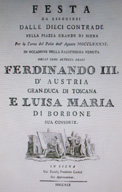

|
|
 |
16 agosto 1791
BRUCO
|
L'ordine è quello di entrata fra i canapi e il grassetto indica la vincitrice
In questo colore le contrade estratte a sorte
Cliccando sui nomi dei fantini e sulle immagini, si apriranno le relative pagine
(Abbreviazioni: B=baio; G=grigio; I=isabella; M=morello; R=roano; S=sauro)
* Fantino esordiente
GIUDICI DELLA MOSSA: Antonio Forteguerri e Luigi Spannocchi
CAPITANO VITTORIOSO: Saverio Porciatti
La contrada non vinceva dal 16 agosto 1763
Il fantino non vinceva dal 16 agosto 1790

Avendo il popolo Senese per mezzo di deputati spediti, avuto sicuro riscontro dei nostri Reali Sovrani, nella Festività dell'Assunta, sarebbero in Siena, tutti i corpi morali si fecero un dovere di venir si per festeggiare una sì grata venuta.
La mattina del 13 Agosto infatti arrivò da Firenze Ferdinando III accompagnato dalle 17 Contrade accorse per qualche distanza da Siena ad incontrarlo colle loro Bandiere.
Il dopo Pranzo la R.A. sua fece una corsa a Monte Oliveto Maggiore e si restituì a Siena, nella notte arrivò Luisa Amalia sua Real Consorte;
il 14, e 15 vi furono nella Metropolitana le solite Sacre Funzioni da essi assistite e dopo goduto del Palio alla Lunga si portarono al Teatro a sentire il celebre Soprano Marchesi: il 16 ebbe effetto la famosa corsa di Piazza eseguita con la massima magnificenza e decorata da eleganti Carri Trionfali, e vaghe comparse adorne di
Mantini taffettà e veli con grandiosa Banda di vari strumenti.
La prima Contrada ad entrare in Piazza fu la Civetta in un carro Trionfale fece Minerva colle Arti belle da essa protette lo precedevano i Genij intrecciando corone di Lauro.
Seconda: Torre fece il Monte Parnaso in cima il tempio con Apollo, e sotto 9 dei più Celebri Poeti Greci, da un lato il cavallo Pagaseo era seguito da uno stuolo di Poeti vestiti alla Francese, e più un altro carro con banda di Strumenti.
Terza: Aquila in mezzo ad un colonnato sfolgoraggiante d'oro, e ricchi ornamenti rappresentò il convito delle Deità, e Giove spedì l'Aquila a rapire Ganimede appiedi poi precedevano vari Semidei.
Quarta: Montone, fece un magnifico Cocchio Cinese rappresentante una Figura allusiva al commercio tanto favorito dall' Augusto Leopoldo, gli facevan corona un Etiopo, un Olandese, uno Spagnolo e un Levantino, e dirimpetto la Toscana colla fama accanto precedevano a piedi altri popoli commercianti dell'Europa.
Quinta: Nicchio in vaga conchiglia rappresentò il Trionfo di Cerere inventrice dell'Agricoltura alla quale faceva corona le quattro Stagioni, seguivano il carro molti Pastori, e Pastorelle elegantemente vestiti.
Sesta: Leocorno in una oscura grotta situata alle spiagge del Mare, rappresentò la Fucina di Vulcano ove vedevansi i Ciclopi intenti a lavorare un'iscrizione, precedevano il Carro alcuni Marinari vestiti di mantino color d'oro e bianco.
Settima: Pantera, in un carro rappresentò la Gloria attorniata da vari Sacerdoti in atto di scannare una Pantera offerta in vittima da alcuni Selvaggi altri di questi a piedi con turcassi ed Archi, festeggiavano un tal sagrifizio.
Ottava: Bruco, questo carro rappresentava il Monte Ida con un tempio antico Mozzo, e diroccato, con persone in abito Sacerdotale, e geroglifici rappresentanti Pibele, e Vesta con ara in mezzo e fuoco custodito dalle Vestali, nel rappresentare le Feste Morgalesi, volle esprimere la fermezza ed obbedienza dei Senesi verso R.i Sovrani, precedeva il Carro una turba di Coribanti in toghe con lunghe sistri e Cembali.
Nona: Selva, in scoscesa Montagna sotto falde di Quercia, in un Bosco comparivano Diana, Endimione, Orseo simboleggiò la vita rustica dell' Antichi Greci applicata al culto degli Dei, alla caccia, all'amore, ed alla Musica, precedevano a piedi alquante coppie di Selvaggi.
Decima: Oca, rappresentò in un carro fatto a foggia di un vago Parterre, i sagrifizi di Pale, presso ai quali si vedeva assisa la Pubblica Felicità, ed un ridente stuolo di Pastori e Pastorelle molti dei quali vagamente vestiti seguivano il carro.
Fu data la mossa e fu bellissima.
Scappò prima la Civetta (Ciocio), che poi allo steccone di S.Martino passò primo il Bruco con Dorino e così durò quasi tutta la 1^ girata; alla seconda il Montone (Sorba) passò il
Bruco e a S.Martino si ritrovarono insieme Montone, Civetta e Bruco. Al Casato
poi passò l'Aquila (Gigi Bestia) e mandò lesto il cavallo del Bruco alla bottega del pizzicagnolo Mastacchi, e subito subentrò la Civetta con dietro Montone, Selva (Corneto),
Pantera con Macellaretto (detto anche Mattiaccio) e Bruco, e girando così la 3ª girata, ma però il Bruco sempre vantaggiava ed al Casato cominciò ad accostarsi ai primi cavalli e poi passò tutti e fece ancora la 4ª girata riportando il premio detta contrada del Bruco con Dorino fantino,
essendo quasi 30 anni che non aveva vinto palii.
Dopo la Corsa i R.R. Sovrani andarono ad una Accademia a Collegio Tolomei, indi al Teatro. Il 17, gran festa alla Lizza, ed in Fortezza, con Ballo, e terminò con grande illuminazione dentro la detta Fortezza.
La mattina del 18 vi fu alla Metropolitana esposto il SS.mo Sacramento per implorare ogni felicità ai nostri Sovrani, ed il dopo Pranzo la Nazione Ebrea fece correre un Palio alla Lunga con 14 Cavalli, e per la ristrettezza del tempo non ebbe luogo d'essere eseguita la Cuccagna, già preparata, la sera grand'illuminazione in Piazza, e nel mezzo fu costruito un elegante Tempietto da cui pendevano dei Padiglioni di drappo con sopra le Bandiere delle sette Contrade che non corsero, le quali si unirono alle spese del parterre, ma nel tempo che si illuminava suddetta Macchina prese fuoco, e si abbruciarono oltre idrappi tutte ancora le Bandiere, che nel momento fu accomodato alla meglio, e si proseguì l'illuminazione.
Nel torrione del Palazzo Cerretani si leggeva in lettere trasparenti il seguente distico, Viva e Regni Felice il saggio il Forte Ferdinando III, e sua Real Consorte.
Nella sera stessa intervennero i RR. Sovrani alla Festa di Ballo, data dagli Accademici Rozzi nella loro gran Sala e stanze annesse, ed una Galleria assai ben messa, tutta ornata di verzura.
Questa fu la corona di tutte le Feste, mentre la mattina del giorno susseguente 19, s'ebbe il dispiacere di veder
partire quest'amabile Sovrano, e il dopo Pranzo la R. Granduchessa.
(Da "I quaderni del Griccioli" della Nobil Contrada dell'Aquila)




|
|
|